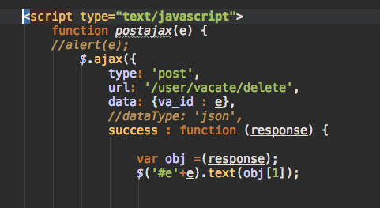

axios
使用
直接加入cdn：
<script src="https://unpkg.com/axios/dist/axios.min.js"></script>
与$.ajax的比较


bug
ci与axios使用会触发一个致命的bug，是php5.6引起的。
具体为ci中$this->input->post接收axios.post会取不到值，网上解决方法用
json_decode(trim(file_get_contents(‘php://input’)), true);
虽然取到值了，但是返回给前端的json却带有warning，无法用js取到返回的指定的值。